Un vivier d'influences entre Fluxus et les début de la musique électro-acoustique
Fluxus serait alors “ni un mouvement particulier ni un style particulier. Ce n’est sans doute pas un rassemblement organisé d’individus recherchant un même objectif artistique. Fluxus est peut-être une attitude, un esprit particulier envers la création artistique, l’art et la vie.”13
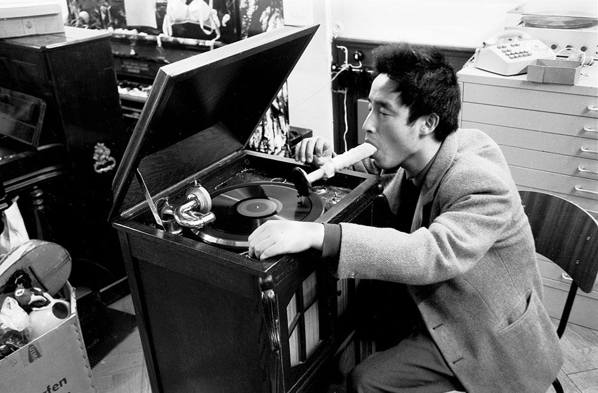
Nam June Paik (1932-2006), né à Séoul, étudie la musique et la composition au Japon puis en Allemagne, où il rencontre John Cage en 1958 et rejoint Fluxus. C'est donc par la musique qu'il arrive à l'art vidéo, et sa manière de travailler l'image en restera profondément marquée : chez lui, image et son sont liés par le sens, pas seulement par la synesthésie comme dans les premières tentatives de représentation du son.
En 1963, à la Galerie Parnass de Wuppertal, son exposition Exposition of Music – Electronic Television réunit pianos préparés, installations de disques et de bandes magnétiques, et douze téléviseurs modifiés. Dans Listening to Music through the Mouth, la tête de lecture d'un gramophone est remplacée par un objet que l'on tient en bouche pour sentir les vibrations du disque. Avec la télévision, le médium devient audiovisuel, et non plus audio au service du visuel. Paik le constate en arrivant aux États-Unis en 1964, dans une culture nourrie de cinéma et de télévision. Ce langage télévisuel expérimental se retrouve ailleurs, par exemple en France dans les émissions absurdes de Jean-Christophe Averty.
Appliquer la manière de travailler le son à d'autres médiums donne à son œuvre une dimension sémantique : le son n'est plus le pourquoi, mais plutôt le comment.
Organ²/ASLSP (As SLow aS Possible) est une pièce pour orgue composée par John Cage en 1987, adaptée de sa pièce pour piano ASLSP (1985). La partition ne fixe pas de durée : seule l'indication « aussi lentement que possible » guide l'interprète.
Depuis 2001, l'église Saint-Burchardi de Halberstadt (Allemagne) accueille une exécution prévue pour durer 639 ans, jusqu'en 2640. Un orgue construit pour l'occasion tient chaque accord grâce à des poids posés sur les touches, et chaque changement de son, espacé de plusieurs mois ou années, devient un événement public. La partition devient ainsi une installation sonore permanente, que l'on visite plus qu'on ne l'écoute.
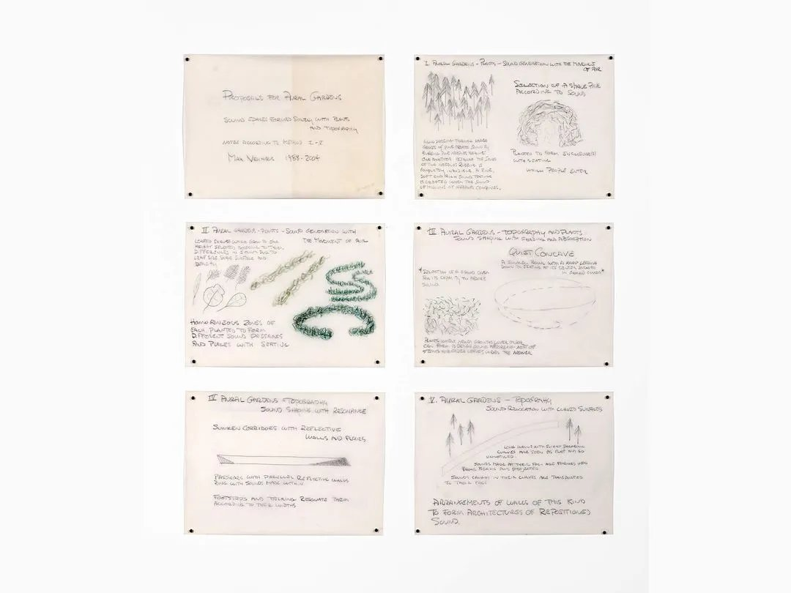
Max Neuhaus (1939-2009), né au Texas, est d'abord percussionniste : formé à la Manhattan School of Music, il joue en soliste avec Pierre Boulez et Karlheinz Stockhausen. En 1966, sa version de Fontana Mix de John Cage (Fontana Mix Feed) place des micros sur les percussions, face aux haut-parleurs, et joue du larsen. La même année, il tamponne « LISTEN » sur la main des personnes qu'il emmène écouter les sons de New York : c'est souvent considéré comme sa première œuvre.
Dès 1968, il arrête de se produire comme musicien et invente l'expression « installation sonore » pour désigner un son pensé pour un lieu précis. En 1977, il réalise Times Square : un son continu qui s'échappe d'une grille de trottoir à Manhattan. L'œuvre fonctionne toujours et beaucoup de passants ne la remarquent pas. Cette discrétion est au cœur de sa démarche.
Avec les Proposals for Aural Gardens (1988-2004), Neuhaus imagine des jardins sonores sans aucun dispositif technique. Le frottement d'aiguilles de pin ou de feuilles produit le son, et le relief du terrain le façonne : certaines zones l'absorbent, des surfaces courbes le réfléchissent et le concentrent. L'artiste se fait paysagiste : il compose l'espace plutôt que le son.
L’art sonore, au sens où il sera employé ici, définit une notion qui a eu une fréquence d’utilisation grandissante depuis la fin des années 1990, on en retrouve des traces dès la fin des années 70 mais dont la définition varie autant par ses chefs de file que par d’autres artistes qui prennent le son comme médium principal. On peut citer Annea Lockwood :
“L’Art Sonore. Je trouve que c’est un terme pratique, mais pourquoi ? Je l’applique à des pièces que je réalise en utilisant des ressources électro-acoustiques et dans lesquelles j’ai l’intention qu’elles soient présentes dans des galeries, des musées et d’autre endroits où le son est, de plus en plus, perçu comme un média en soi, comme la vidéo, les lasers, mais pas comme une performance. [..] Je pense que peut-être que ce que l’on appelle «l’Art Sonore» n’a pas l’intention de se connecter au langage. Et au final, tous les styles de musique, de performance deviennent des langages, même les œuvres anti-linguistiques de John Cage, alors que les gens se familiarisent de plus en plus avec ses intentions et ses mondes sonores. Néanmoins, le terme a peut-être été évoqué de manière pragmatique pour et par les conservateurs de musées pour rendre compte de l'acceptation du son dans leur monde.”
Le terme Art sonore semble ainsi s’appliquer de l'intérêt grandissant pour ce média et de son intégration au sein des lieux où l’art est exposé, au sein des galeries et musées. Terme apparu de nombreuses années après les précurseurs de mouvement que l’on pourrait qualifier d’art sonore au travers de personnalités comme John Cage et Pierre Schaeffer ou de mouvements comme la musique concrète et le mouvement fluxus. Max Neuhaus, pionnier de l’installation sonore, s’exprime à propos de l’art sonore :
“S'il y a une raison valable de classer et de nommer les choses dans la culture, c'est certainement pour le raffinement des distinctions. Les expériences esthétiques se situent dans le domaine des distinctions fines, et non de la destruction des distinctions pour la promotion d'activités avec leur plus petit dénominateur commun, dans ce cas, le son. Une grande partie de ce que l’on a appelé le «l’Art Sonore» n’a pas grand-chose à voir avec le son ou l’art”
Terme qui semble porter à débat au sein du milieu artistique il n’en est pas moins intéressant que ce que l’on appelle aujourd’hui l’art sonore est une réalité de conclusion descendante des progrès effectués dans ce domaine et dans sa visibilité dans les lieux artistiques depuis un demi-siècle. Nous prendrons ainsi en exemple les paroles de Christian Marclay, artiste plasticien et musicien qui explora les connexions entre son, photographie, vidéo et film :
“Je pense que c’est une bonne chose qu’il y ait un intérêt envers le son et la musique, car la globalité des structures du monde de l’art ne sont pas prêtes pour cela, car le son nécessite différentes technologies et différentes architectures pour être présenté. On imagine toujours les galeries et les musées comme des galeries du 19ème siècle :”comment allons-nous l’accrocher au mur, comment allons-nous l’éclairer?” mais personne ne s’y connaît en son - comment orienter une enceinte, comment l’égaliser en fonction de la pièce. Il n’y pas ce genre d’expertise au sein du monde des musées. De plus en plus de musées possèdent des pièces d’écoutes mais il y a beaucoup de changements qui ont besoin d'être fait avant que le monde de l’art soit réellement prêt à présenter le son comme art”Christian Marclay, Citation, Interview de Philip Sherburne, “This Artist Makes Music Like You’ve Never Seen Before and Art Like You’ve Never Heard Before”, Mars 2005
Un exemple actuel qui fait écho à la tradition des performances et nouvelles lutheries des premières installations sonores de Fluxus
Tarek Atoui, né à Beyrouth en 1980, vit et travaille à Paris. Il arrive à l'art contemporain par la musique : formé à la composition électro-acoustique, il est ensuite directeur artistique du STEIM, centre de recherche sur les nouveaux instruments de musique à Amsterdam. Depuis une vingtaine d'années, il fait du son le cœur de ses installations et performances. Il fabrique des instruments qui mêlent matériaux anciens et techniques traditionnelles (branches, pierres de granit, bols en bronze) à des cymbales, haut-parleurs, platines vinyles et machines informatiques conçues sur mesure.
Son travail est souvent collectif : beaucoup de ses œuvres naissent d'ateliers menés avec des enfants de maternelle ou avec des personnes sourdes et malentendantes, qui l'amènent à penser l'écoute autrement que par l'oreille. Représenté par la galerie Chantal Crousel, il a exposé à la Biennale de Venise, à la Tate Modern et au Mudam. The Drift, à l'IAC de Villeurbanne (2023-2024), est sa première exposition monographique dans une institution française.
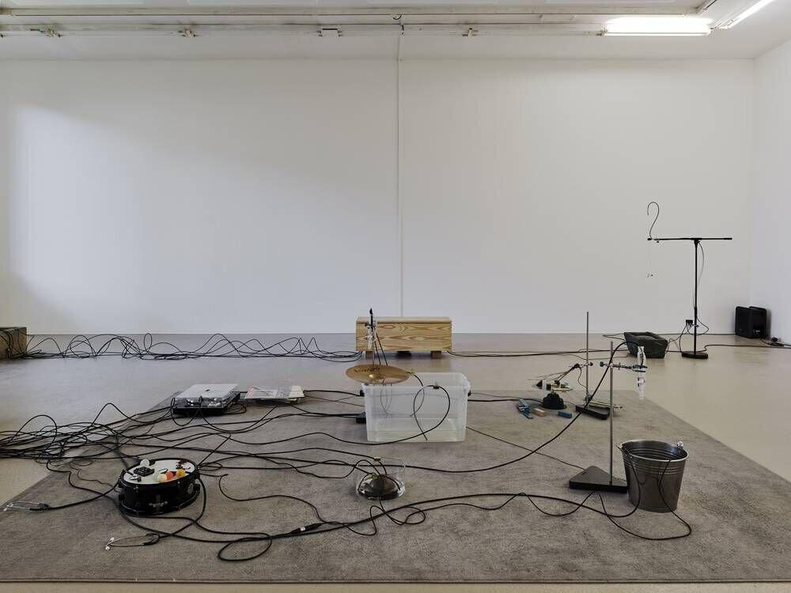
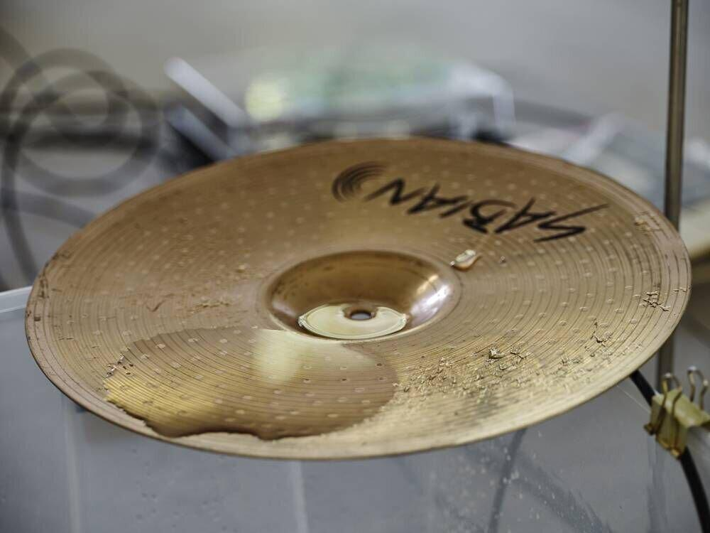
Whispering Playground (2021) appartient à la série The Whisperers, née de cinq ateliers menés entre novembre 2020 et juin 2021 avec des enfants de 5 ans dans une classe de maternelle de l'École alsacienne, à Paris, où étaient scolarisés ses propres enfants.
Sur un grand tapis gris sont posés des objets du quotidien : un seau en métal, une platine et une pile de vinyles, une caisse claire, un bac en plastique transparent, des petits blocs de bois. Des câbles noirs les relient en un réseau, et l'installation s'anime seule : des balles de ping-pong vibrent sur la caisse claire, un tube d'arrosage fait tomber des gouttes dans le seau, un autre fait couler de l'eau sur une cymbale posée en équilibre sur le bac. Le son est capté et réinjecté dans l'espace, et le résultat reste discret : il faut s'approcher pour l'entendre.
L'œuvre est aussi un espace d'atelier : des groupes, dès 4 ans, viennent jouer avec un stéthoscope, des balles, des vinyles ou de l'eau pour découvrir la vibration, le son sous l'eau ou la rotation. Atoui la décrit comme « une œuvre pivot », un point de rencontre entre composition, exposition, atelier et pédagogie. On retrouve ici l'héritage Fluxus : des objets ordinaires, un instrument inventé, et un public qui passe de l'écoute au jeu.
Site de l'artiste : tarekatoui.com
Source : « Tout savoir sur l'artiste Tarek Atoui, sculpteur du son exposé à l'IAC »
Ioana Vreme Moser est née en 1994 à Timișoara (Roumanie). Ses parents y ouvrent l'un des premiers studios de graphisme de la ville dans les années 1990. Après une dizaine d'années de danse classique, elle étudie à l'université de Timișoara, avec une année Erasmus à Cracovie (2012-2016). Son mémoire porte sur le son synthétique des avant-gardes russes des années 1920, et elle découvre l'électroacoustique à l'Académie de musique de Cracovie. En 2016, elle s'installe à Berlin pour quitter un milieu culturel roumain qu'elle juge trop conservateur.
Elle travaille surtout avec des composants électroniques récupérés, souvent donnés par d'autres artistes. Elle les associe à des matières organiques (terre, feuilles) et les transforme en instruments ou en « créatures » sonores. Son travail interroge l'obsolescence, les déchets électroniques et le coût de l'efficacité technologique. Elle se tourne aussi vers d'autres technologies, comme la fluidique, abandonnée au profit de l'électronique.
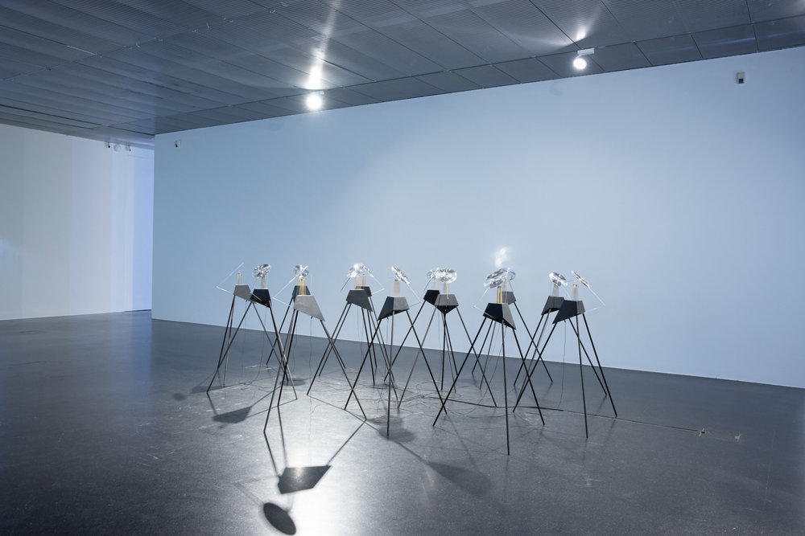
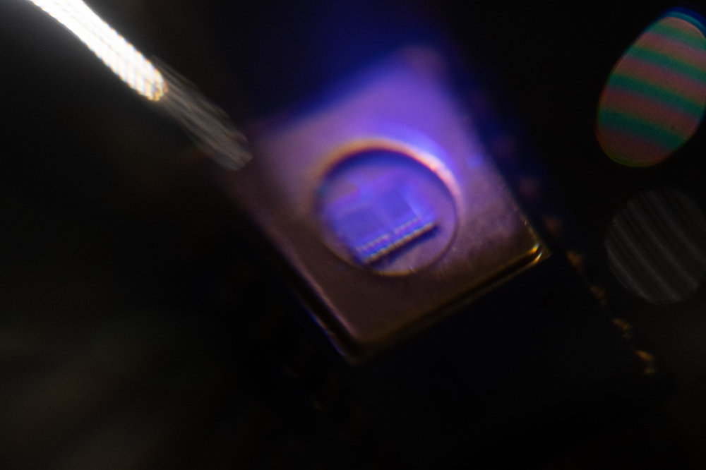
Mineral Amnesia (2023) est une installation sonore de longue durée composée de 13 objets, chacun construit autour d'une EPROM. L'EPROM (Erasable Programmable Read-Only Memory) est la première mémoire en silicium effaçable et reprogrammable, inventée par Intel en 1971, à côté du premier microprocesseur. La puce est protégée par une petite fenêtre en quartz, et ses données s'effacent quand elle est exposée aux ultraviolets : c'est ainsi qu'on la « vidait » pour la réécrire.
L'artiste récupère des EPROM de plusieurs générations, de la 2708 (8 kilobits) jusqu'à des modèles d'1 mégabit. L'installation les lit en temps réel et transforme leur contenu en son. Certaines puces, retrouvées encore programmées depuis les années 1970, livrent même des fragments de voix. Une discrète lumière UV les éclaire en permanence : elle agit comme un abrasif qui ronge et déforme peu à peu les données, jusqu'à ce que le son se dégrade puis disparaisse. L'œuvre fait entendre sa propre disparition.
Le projet parle de l'« âge sombre du numérique » (Digital Dark Age) : avec la course à la puissance de calcul, qui double tous les deux ans et s'accélère aujourd'hui avec l'intelligence artificielle, une grande partie de l'information numérique devient illisible. Elle reste enfermée dans du matériel dépassé comme ces EPROM, qui finissent en déchets toxiques enfouis dans le sol. Ioana Vreme Moser a été accompagnée par Dorian Largen pour ce qu'elle appelle l'« archéologie » des puces, la programmation et les circuits.
Commandée par Simultan (Timișoara) et la Galerie Nord (Berlin), l'œuvre a été présentée en 2023 à Timișoara, alors Capitale européenne de la culture (Sonic Narratives, puis le festival Simultan XVIII), et à la Galerie Nord, Kunstverein Tiergarten, à Berlin. Elle a ensuite été montrée en 2024 au Dům umění de Brno (exposition Beyond the Sound) et en 2025 au Lentos Museum de Linz, lors de l'exposition du Prix Ars Electronica.
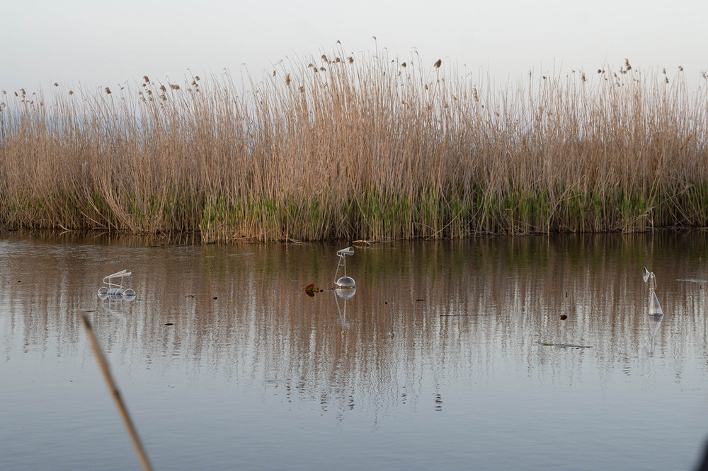
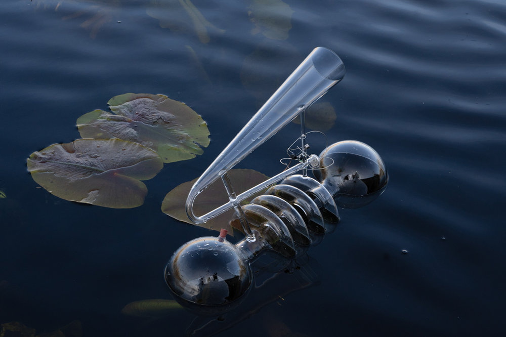
Warble Buoys (2026) est une installation sonore conçue pour un lieu précis : cinq bouées flottantes installées dans le delta du Danube, à Sfântu Gheorghe (Roumanie). Chaque bouée, en verre borosilicate, contient un petit circuit électronique de type Joule Thief. Des capteurs immergés, proches d'électrodes d'oxydoréduction, captent l'activité électrique de l'eau douce.
Les variations de la chimie de l'eau, liées à l'activité métabolique du milieu, et les mouvements du courant deviennent des oscillations sonores. Des entonnoirs en verre les amplifient en textures rythmiques discrètes. Le fleuve joue lui-même sa partition, et l'œuvre rend audible un écosystème qu'on ne perçoit pas à l'oreille nue. Le projet s'inscrit dans le programme S+T+ARTS Aqua Motion d'Ars Electronica et dans le projet Hidrotopias, produit par Qolony.
Site de l'artiste : ioanavrememoser.com, avec les pages Mineral Amnesia et Warble Buoys
Sources : Obsolete Studio, « Ioana Vreme Moser » ; ioanavrememoser.com, Mineral Amnesia ; ioanavrememoser.com, Warble Buoys
Vahan Soghomonian est né en 1982 à Lyon, où il vit et travaille. Artiste, musicien et poète, il est diplômé de l'École supérieure d'art d'Aix-en-Provence en 2008 et a participé au Laboratoire espace cerveau, groupe de recherche interdisciplinaire de l'IAC de Villeurbanne. Il construit des dispositifs qui invitent à explorer l'imaginaire, et avance par analogie, d'un concept à l'autre : « Je compose des recettes avec des médicaments ». Mots, plantes, sons, images et matériaux y forment un réseau organique qui s'adapte à chaque lieu, comme dans FYTOLIT (2016-2018), où sculptures cinétiques, lumière et plantes vivantes s'organisent selon un système inspiré de la neuroplasticité.
La montagne revient souvent dans son travail, en particulier le mont Ararat, en Arménie, et le Mont Analogue de René Daumal : à la fois force géologique et pont métaphysique. Depuis 2015, cette recherche prend la forme des ORG, une série d'instruments qui sont aussi des appareils d'observation. Ils captent et émettent les variations de leur environnement, et deviennent la mémoire active d'un lieu. Au fil de leurs métamorphoses, les ORG quittent la salle d'exposition pour s'installer dans le paysage : ils relèvent alors du Land Art.
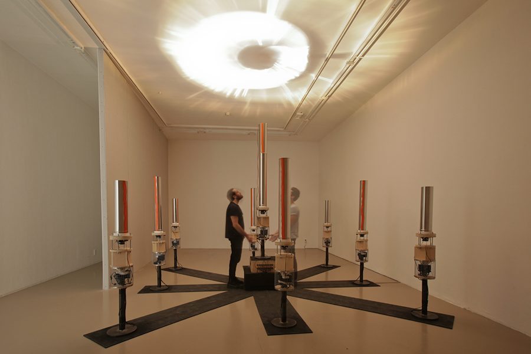
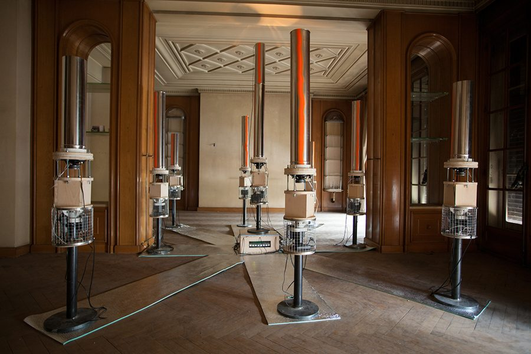
ORG (2014-...) est une installation sonore interactive et collaborative : un orgue numérique. Elle part d'objets abandonnés d'une usine de Charleroi (Belgique), réinterprétés et réaffectés à une fonction sonore. La direction musicale s'appuie sur la théorie pythagoricienne de l'harmonie des sphères, qui associe chaque planète à une note.
Des capteurs infrarouges disposés en cercle pilotent le logiciel qui génère le son. Seule, la machine joue une harmonie par défaut (son mode « célibataire ») ; dès que l'on se déplace à l'intérieur, elle passe en mode « attentif » et réagit aux mouvements du public. Vahan Soghomonian a conçu l'œuvre avec les compositeurs de musique expérimentale Matthieu Raynaud et Fabien Ainardi pour la mécanique sonore, et l'artiste hypermédia Raphaël de Staël pour la partie interactive. Elle a été présentée en 2015 dans l'exposition KATA TJUTA à l'IAC de Villeurbanne.
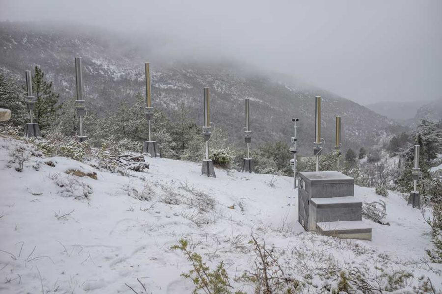
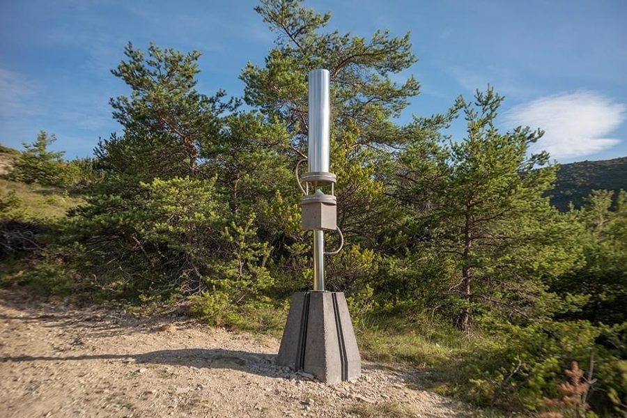
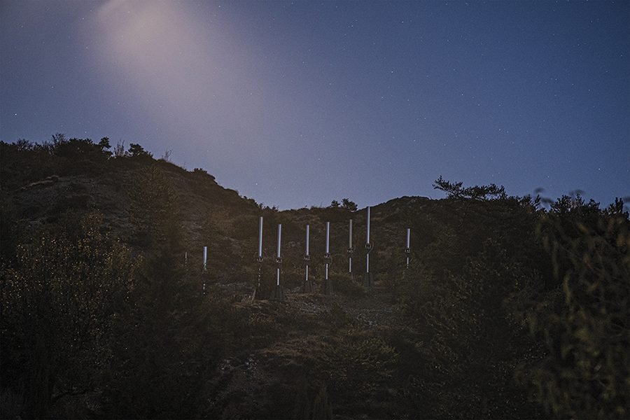
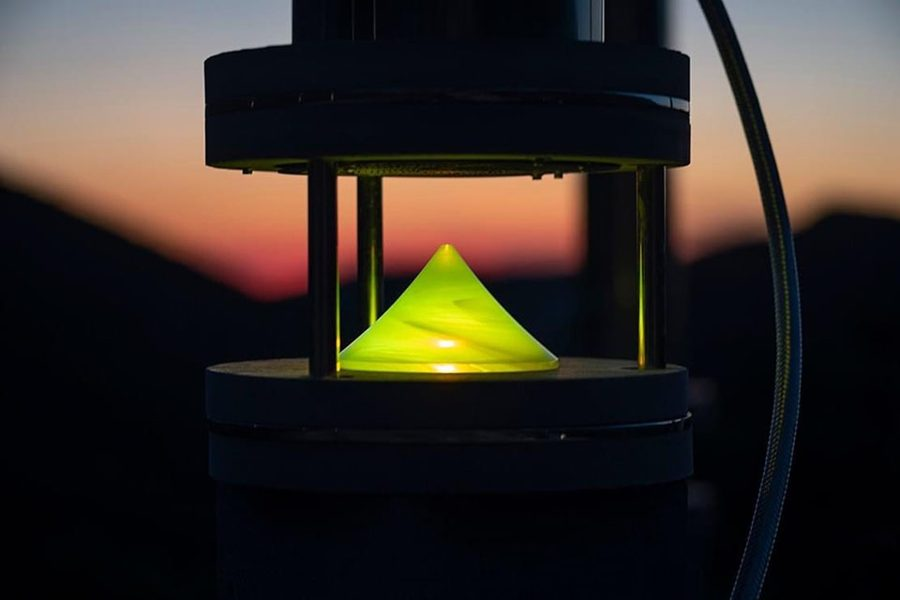
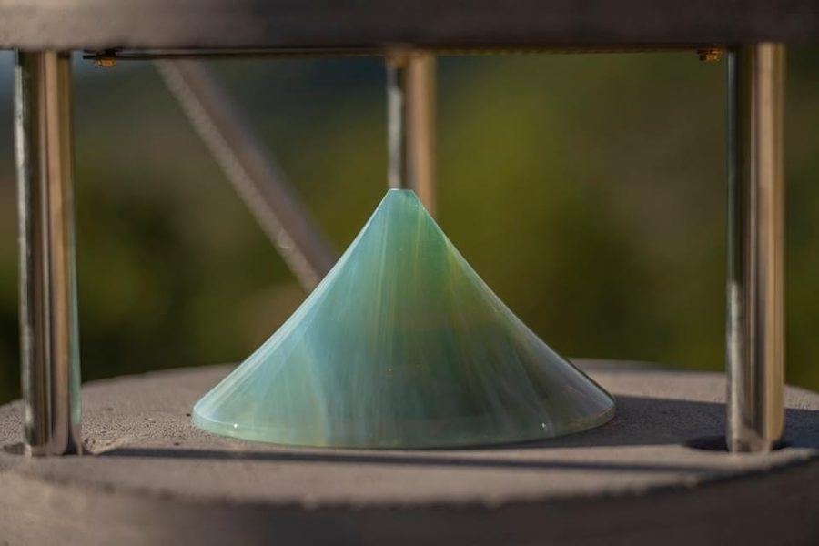
ORG-RCHBRN (2019-...) est la deuxième métamorphose du projet : « un instrument construit pour capter et émettre le chant de la montagne ». Il naît de la commande d'un mécène, qui souhaitait un ORG cosmique pour une montagne des Baronnies, en Drôme provençale. L'instrument est pensé comme une arche, au double sens de pont et de boîte : il se tient entre la dernière construction humaine, la bergerie du mécène, et la réserve naturelle des Baronnies, comme un refuge au milieu des éléments.
Il se compose de huit modules encadrés par deux constructions en escalier : l'une est une salle de contrôle climatisée, l'autre abrite un caisson de basses. L'instrument fonctionne selon trois modes :
L'œuvre est collective : Fabien Ainardi, Julien Borrel, Rémi Georges, Elsa Kritkanjanapan, Matthieu Raynaud, Raphaël de Staël, Nicolas Tardy, Irwin Barbé, Jean-Erwan Rivolin et Renaud Chauvin-Buthaud y ont participé.
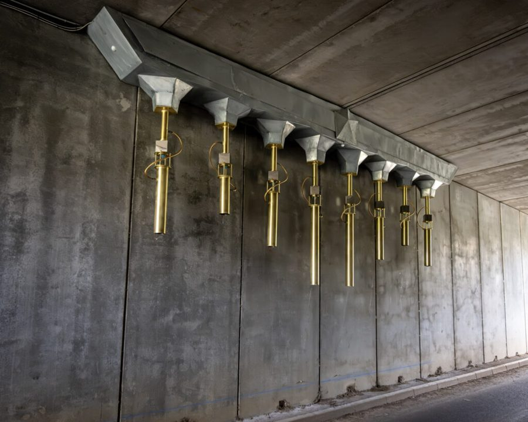
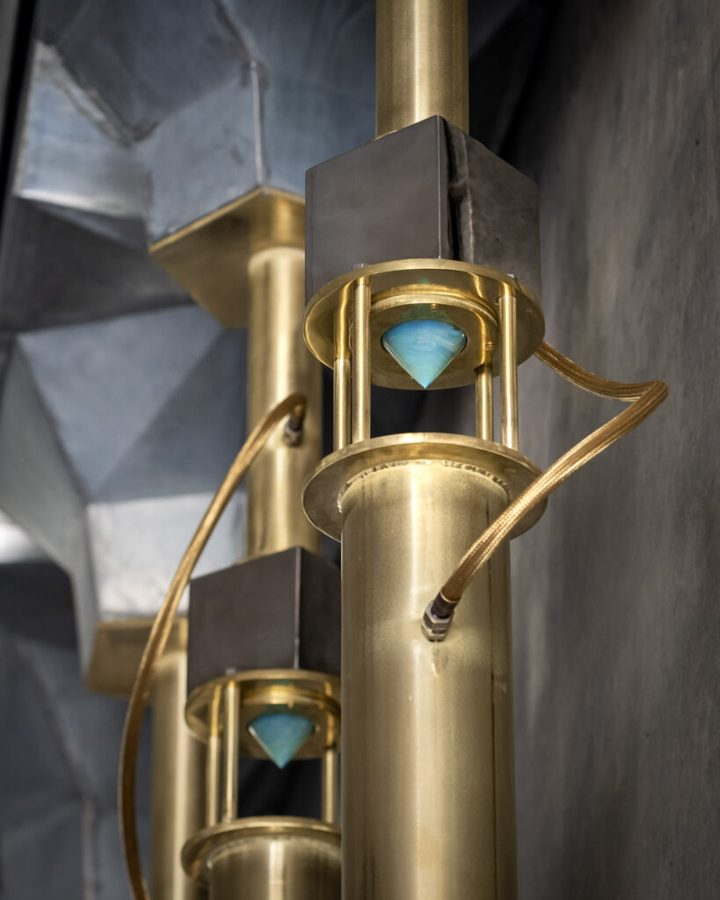
ORG-MITRA (2023-...), troisième ORG, est « un instrument topographique créé pour faire chanter une autoroute et murmurer un tunnel ». Il est installé dans un tunnel piéton sous l'autoroute A89, à Saint-Germain-Nuelles, sur le circuit D'or et vin. Il a été commandé par la Communauté de communes du Pays de L'Arbresle dans le cadre du parcours Les Murmures du Temps, mené avec la Maison Gutenberg.
Des tubes de métal doré, inspirés des stalactites, pendent de la voûte. Au passage des promeneurs, des capteurs de mouvement déclenchent une séquence générative qui mêle des notes jouées sur un instrument créé pour l'occasion, le « mitraphone », une sorte de vibraphone en laiton sur accordages microtonaux arméniens, des silences et des poèmes chuchotés. La composition varie aussi selon la circulation des véhicules sur l'autoroute au-dessus : chaque passage produit une composition unique, sur le principe d'un oracle. L'autoroute, réseau de transit et lien entre territoires, devient une matière musicale, et le tunnel un lieu de passage que l'on écoute.
Les poèmes viennent de différentes sources : d'un isolement de l'artiste au couvent de la Tourette de Le Corbusier, au solstice d'hiver, d'ateliers avec des enfants qui sont au moment transitoire de la découverte du language, mais aussi avec des personnes en situation de dépendances à l'hôpital de L'Arbresle, et la dernière source provient des textes commandés auprès d'Harold Barme écrivain expérimental sur le mythe de Mitra. Rémi Georges a composé pour l'oeuvre et s'est occupé de la partie informatique musicale et technique pour la conception de la régie et la diffusion sonore, et Jonas Baroude a assuré la production métal aux cotés de Vahan Soghomonian et Elsa Kritkanjanapan.
Site de l'artiste : vahansoghomonian.net
Sources : IAC, « Vahan Soghomonian » ; Slash Paris, « Vahan Soghomonian » ; vahansoghomonian.net, ORG ; vahansoghomonian.net, ORG-RCHBRN ; Les Murmures du Temps, ORG-MITRA ; Maison Gutenberg, ORG MITRA ; remigeorges.fr, ORG-RCHBRN et ORG-MITRA